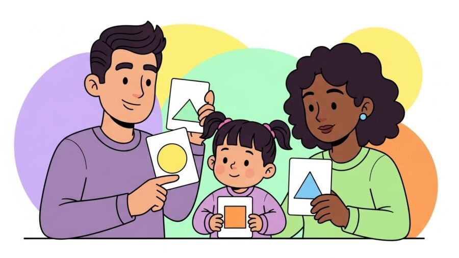
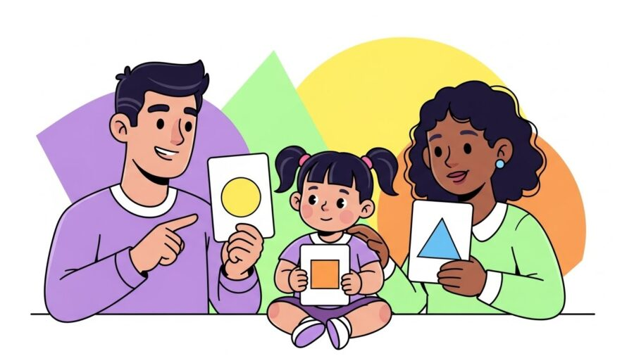
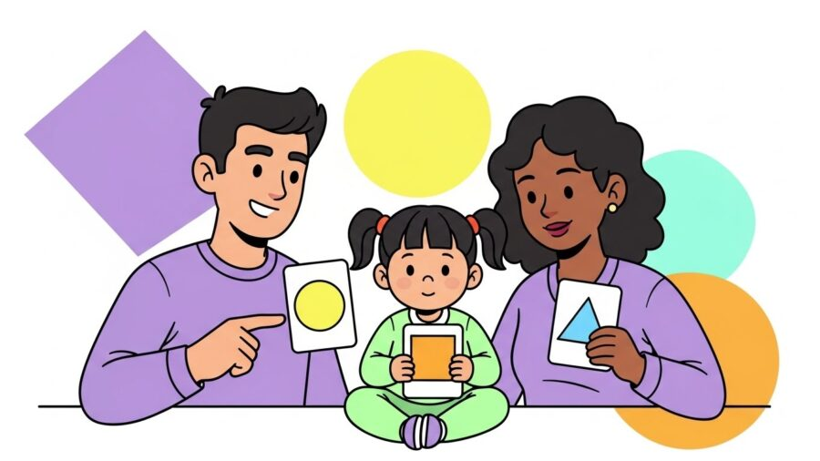

Terapias e Abordagens
Terapias e Abordagens
26 de novembro de 2025

Falar sobre autismo em Porto Alegre é falar sobre famílias que desejam fazer o melhor pelos seus filhos, mesmo quando os desafios parecem grandes demais, intensos demais ou inesperados demais. Todos os dias, na HD 360 Moinhos, recebemos mães, pais, avós e cuidadores com uma mesma pergunta no olhar: “O que eu posso fazer em casa para ajudar meu filho a se desenvolver?”

Essa pergunta é legítima, necessária e, principalmente, transformadora. Porque embora clínicas especializadas como a nossa tenham papel essencial no tratamento, é dentro de casa que a criança passa a maior parte do tempo, e é ali que hábitos saudáveis, interações intencionais e pequenas estratégias podem acelerar resultados de forma impressionante.
Este artigo foi construído justamente para isso: traduzir a ciência do comportamento, da neuropediatria, da psicologia e da terapia ABA em ações práticas, que qualquer família pode implementar em casa de maneira sensível, organizada e efetiva.
Aqui você vai aprender:
Tudo com base nos princípios que usamos diariamente na HD 360 Moinhos, referência em autismo em Porto Alegre e especializada em intervenção infantil.
Nenhuma intervenção familiar funciona se não houver uma compreensão clara do que é o Transtorno do Espectro Autista (TEA).
Autismo não é falta de educação.
Não é teimosia.
Não é “fase”.
Não é culpa da família.
Autismo é uma condição neurológica permanente, que afeta principalmente três áreas:
Mas também pode afetar:
E cada criança é única. Uma criança autista em Porto Alegre pode apresentar dificuldades completamente diferentes de outra criança autista da mesma idade, bairro ou escola.
Ao entender isso, a família começa a agir com menos culpa e mais estratégia, menos frustração e mais propósito.
A casa não precisa ser uma clínica.
Mas precisa oferecer previsibilidade, clareza e segurança.

O cérebro autista busca organização. Quanto maior a desorganização ambiental, maior a chance de:
✔ Crie rotinas visuais
Use quadros, cartões, fotos reais ou pictogramas para mostrar:
✔ Evite estímulos em excesso
Ambientes muito cheios são gatilhos sensoriais comuns.
Guarde brinquedos em caixas separadas.
✔ Estabeleça zonas
✔ Use transições claras
Avisos como “falta 2 minutos para guardar os brinquedos” ajudam muito.
Quando a casa se torna previsível, a criança tende a cooperar mais, e todo o processo de desenvolvimento avança.
A maioria dos desafios familiares envolvendo autismo em Porto Alegre nasce da frustração de não conseguir se comunicar com a criança.

A comunicação funcional é mais importante que a fala.
“Guarda o brinquedo.”
“Senta aqui.”
“Vamos comer.”
O cérebro autista processa melhor frases claras e diretas.
Crianças autistas precisam de 3 a 7 segundos para processar uma instrução.
Esse simples ajuste muda tudo.
Quanto mais canais forem usados, maior a compreensão.
Se a criança aponta, vocaliza, entrega um objeto ou faz um gesto, responda imediatamente.
Adivinhar antes da criança tentar se comunicar reduz a motivação de desenvolver novas habilidades.
O desenvolvimento emocional da criança autista exige previsibilidade, regulação sensorial e estratégias consistentes.
“Acho que você está bravo.”
“Isso te assustou.”
“Você está feliz!”
Nomear emoções ajuda o cérebro a organizar informações internas.
São pequenas narrativas que explicam:
Funcionam muito bem para banho, escola, consultas médicas, cortes de cabelo, refeições e novas atividades.
Inclua:
Ao invés de dizer apenas “não faça isso”, mostre o que ela deve fazer.
Famílias frequentemente subestimam a capacidade da criança autista.
Autonomia é construída em pequenos passos, todos os dias.
✔ escovar os dentes
✔ guardar brinquedos
✔ abrir e fechar recipientes
✔ vestir roupas simples
✔ tomar banho com supervisão
✔ montar lanche simples
✔ usar listas visuais para tarefas
A autonomia fortalece:
A aprendizagem não acontece apenas na terapia.
Ela acontece na rotina da família.
✔ use momentos de rotina para ensinar (banho, cozinha, compras)
✔ incentive escolhas (“maçã ou banana?”)
✔ brinque com intenção (blocos, encaixes, jogos simples)
✔ explore leitura compartilhada
✔ aumente gradualmente a complexidade dos desafios
Aprendizagem natural + reforço positivo = evolução acelerada.
Nenhuma terapia substitui a influência diária da família.
Na HD 360 Moinhos observamos, há anos, que famílias que se envolvem ativamente:
Família não é coadjuvante.
Família é protagonista.
A jornada do autismo em Porto Alegre exige orientação, acolhimento e ciência séria aplicada com amor.
Na HD 360 Moinhos, com sede na Quintino Bocaiúva, 451, entendemos a importância de cuidar da família tanto quanto da criança. Nosso compromisso é oferecer suporte técnico, humano e estratégico, dentro e fora da clínica.
Porque quando família e clínica caminham juntas, os resultados florescem.
Leia também